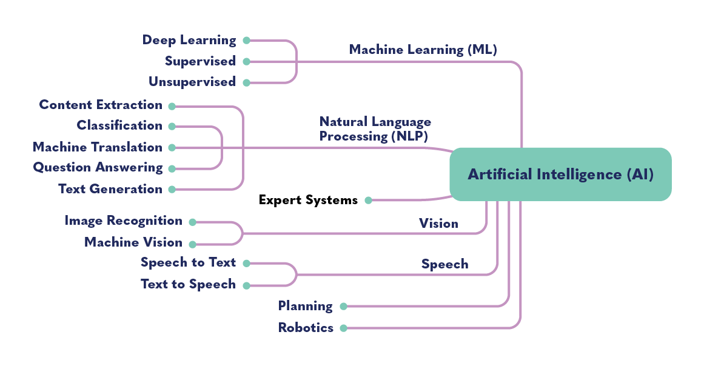

Artificial Intelligence & Machine Learning
What is AI and ML?
Artificial intelligence (AI) is a field of computer science dedicated to solving cognitive problems commonly associated with human intelligence, such as learning, problem solving, and pattern recognition. Put another way, AI is a catch-all term used to describe new types of computer software that can approximate human intelligence. There is no single, precise, universal definition of AI.
Machine learning (ML) is a subset of AI. Essentially, machine learning is one of the ways computers “learn.” ML is an approach to AI that relies on algorithms trained to develop their own rules. This is an alternative to traditional computer programs, in which rules have to be hand-coded in. Machine learning extracts patterns from data and places that data into different sets. ML has been described as “the science of getting computers to act without being explicitly programmed.” Two short videos provide simple explanations of AI and ML: What Is Artificial Intelligence? | AI Explained and What is machine learning?
Other subsets of AI include speech processing, natural language processing (NLP), robotics, cybernetics, vision, expert systems, planning systems, and evolutionary computation.

The diagram above shows the many different types of technology fields that comprise AI. AI can refer to a broad set of technologies and applications. Machine learning is a tool used to create AI systems. When referring to AI, one can be referring to any or several of these technologies or fields. Applications that use AI, like Siri or Alexa, utilize multiple technologies. For example, if you say to Siri, “Siri, show me a picture of a banana,” Siri utilizes natural language processing (question answering) to understand what you’re asking, and then uses vision (image recognition) to find a banana and show it to you.
As noted above, AI doesn’t have a universal definition. There are many myths surrounding AI—from the fear that AI will take over the world by enslaving humans, to the hope that AI can one day be used to cure cancer. This primer is intended to provide a basic understanding of artificial intelligence and machine learning, as well as to outline some of the benefits and risks posed by AI.

Algorithm: An algorithm is defined as “a finite series of well-defined instructions that can be implemented by a computer to solve a specific set of computable problems.” Algorithms are unambiguous, step-by-step procedures. A simple example of an algorithm is a recipe; another is a procedure to find the largest number in a set of randomly ordered numbers. An algorithm may either be created by a programmer or generated automatically. In the latter case, it is generated using data via ML.
Algorithmic decision-making/Algorithmic decision system (ADS): Algorithmic decision systems use data and statistical analyses to make automated decisions, such as determining whether people are eligible for a benefit or a penalty. Examples of fully automated algorithmic decision systems include the electronic passport control check-point at airports or an automated decision by a bank to grant a customer an unsecured loan based on the person’s credit history and data profile with the bank. Driver-assistance features that control a vehicle’s brake, throttle, steering, speed, and direction are an example of a semi-automated ADS.
Big Data: There are many definitions of “big data,” but we can generally think of it as extremely large data sets that, when analyzed, may reveal patterns, trends, and associations, including those relating to human behavior. Big Data is characterized by the five V’s: the volume, velocity, variety, veracity, and value of the data in question. This video provides a short introduction to big data and the concept of the five V’s.
Class label: A class label is applied after a machine learning system has classified its inputs; for example, determining whether an email is spam.
Data mining: Data mining, also known as knowledge discovery in data, is the “process of analyzing dense volumes of data to find patterns, discover trends, and gain insight into how the data can be used.”
Generative AI[1]: Generative AI is a type of deep-learning model that can generate high-quality text, images, and other content based on training data. See section on Generative AI for more details.
Label: A label is the thing a machine learning model is predicting, such as the future price of wheat, the kind of animal shown in a picture, or the meaning of an audio clip.
Large language model: A large language model (LLM) is “a type of artificial intelligence that uses deep learning techniques and massively large data sets to understand, summarize, generate, and predict new content.” An LLM is a type of generative AI[2] that has been specifically architected to help generate text-based content.
Model: A model is the representation of what a machine learning system has learned from the training data.
Neural network: A biological neural network (BNN) is a system in the brain that makes it possible to sense stimuli and respond to them. An artificial neural network (ANN) is a computing system inspired by its biological counterpart in the human brain. In other words, an ANN is “an attempt to simulate the network of neurons that make up a human brain so that the computer will be able to learn and make decisions in a humanlike manner.” Large-scale ANNs drive several applications of AI.
Profiling: Profiling involves automated data processing to develop profiles that can be used to make decisions about people.
Robot: Robots are programmable, automated devices. Fully autonomous robots (e.g., self-driving vehicles) are capable of operating and making decisions without human control. AI enables robots to sense changes in their environments and adapt their responses and behaviors accordingly in order to perform complex tasks without human intervention.
Scoring: Scoring, also called prediction, is the process of a trained machine learning model generating values based on new input data. The values or scores that are created can represent predictions of future values, but they might also represent a likely category or outcome. When used vis-a-vis people, scoring is a statistical prediction that determines whether an individual fits into a category or outcome. A credit score, for example, is a number drawn from statistical analysis that represents the creditworthiness of an individual.
Supervised learning: In supervised learning, ML systems are trained on well-labeled data. Using labeled inputs and outputs, the model can measure its accuracy and learn over time.
Unsupervised learning: Unsupervised learning uses machine learning algorithms to find patterns in unlabeled datasets without the need for human intervention.
Training: In machine learning, training is the process of determining the ideal parameters comprising a model.
How do artificial intelligence and machine learning work?
Artificial IntelligenceArtificial Intelligence is a cross-disciplinary approach that combines computer science, linguistics, psychology, philosophy, biology, neuroscience, statistics, mathematics, logic, and economics to “understand, model, and replicate intelligence and cognitive processes.”
AI applications exist in every domain, industry, and across different aspects of everyday life. Because AI is so broad, it is useful to think of AI as made up of three categories:
- Narrow AI or Artificial Narrow Intelligence (ANI) is an expert system in a specific task, like image recognition, playing Go, or asking Alexa or Siri to answer a question.
- Strong AI or Artificial General Intelligence (AGI) is an AI that matches human intelligence.
- Artificial Superintelligence (ASI) is an AI that exceeds human capabilities.
Modern AI techniques are developing quickly, and AI applications are already pervasive. However, these applications only exist presently in the “Narrow AI” field. Artificial general intelligence and artificial superintelligence have not yet been achieved and likely will not be for the next few years or decades.
Machine learning is an application of artificial intelligence. Although we often find the two terms used interchangeably, machine learning is a process by which an AI application is developed. The machine learning process involves an algorithm that makes observations based on data, identifies patterns and correlations in the data, and uses the pattern or correlation to make predictions. Most of the AI in use today is driven by machine learning.
Just as it is useful to break-up AI into three categories, machine learning can also be thought of as three different techniques: supervised learning; unsupervised learning; and deep learning.
Supervised learning efficiently categorizes data according to pre-existing definitions embodied in a data set containing training examples with associated labels. Take the example of a spam-filtering system that is being trained using spam and non-spam emails. The “input” in this case is all the emails the system processes. After humans have marked certain emails as spam, the system sorts spam emails into a separate folder. The “output” is the categorization of email. The system finds a correlation between the label “spam” and the characteristics of the email message, such as the text in the subject line, phrases in the body of the message, or the email or IP address of the sender. Using this correlation, the system tries to predict the correct label (spam/not spam) to apply to all the future emails it processes.
“Spam” and “not spam” in this instance are called “class labels.” The correlation that the system has found is called a “model” or “predictive model.” The model may be thought of as an algorithm the ML system has generated automatically by using data. The labeled messages from which the system learns are called “training data.” The “target variable” is the feature the system is searching for or wants to know more about—in this case, it is the “spaminess” of an email. The “correct answer,” so to speak, in the categorization of email is called the “desired outcome” or “outcome of interest.”
Unsupervised learning involves neural networks finding a relationship or pattern without access to previously labeled datasets of input-output pairs. The neural networks organize and group the data on their own, finding recurring patterns and detecting deviations from these patterns. These systems tend to be less predictable than those that use labeled datasets, and are most often deployed in environments that may change at some frequency and are unstructured or partially structured. Examples include:
- An optical character-recognition system that can “read” handwritten text, even if it has never encountered the handwriting before.
- The recommended products a user sees on retail websites. These recommendations may be determined by associating the user with a large number of variables such as their browsing history, items they purchased previously, their ratings of those items, items they saved to a wish list, the user’s location, the devices they use, their brand preference, and the prices of their previous purchases.
- The detection of fraudulent monetary transactions based on timing and location. For instance, if two consecutive transactions happened on the same credit card within a short span of time in two different cities.
A combination of supervised and unsupervised learning (called “semi-supervised learning”) is used when a relatively small dataset with labels is available to train the neural network to act upon a larger, unlabeled dataset. An example of semi-supervised learning is software that creates deepfakes, or digitally altered audio, videos, or images.
Deep learning makes use of large-scale artificial neural networks (ANNs) called deep neural networks to create AI that can detect financial fraud, conduct medical-image analysis, translate large amounts of text without human intervention, and automate the moderation of content on social networking websites. These neural networks learn to perform tasks by utilizing numerous layers of mathematical processes to find patterns or relationships among different data points in the datasets. A key attribute to deep learning is that these ANNs can peruse, examine, and sort huge amounts of data, which theoretically enables them to identify new solutions to existing problems.
Generative AI[3] is a type of deep-learning model that can generate high-quality text, images, and other content based on training data. The launch of OpenAI’s chatbot, ChatGPT, in late 2022 placed a spotlight on generative AI and created a race among companies to churn out alternate (and ideally superior) versions of this technology. Excitement over large language models and other forms of generative AI was also accompanied by concerns about accuracy, bias within these tools, data privacy, and how these tools can be used to spread disinformation more efficiently.
Although there are other types of machine learning, these three—supervised learning, unsupervised learning and deep learning—represent the basic techniques used to create and train AI systems.
Artificial intelligence is built by humans, and trained on data generated by them. Inevitably, there is a risk that individual and societal human biases will be inherited by AI systems.
There are three common types of biases in computing systems:
- Pre-existing bias has its roots in social institutions, practices, and attitudes.
- Technical bias arises from technical constraints or considerations.
- Emergent bias arises in a context of use.
Bias in artificial intelligence may affect, for example, the political advertisements one sees on the internet, the content pushed to the top of social media news feeds, the cost of an insurance premium, the results of a recruitment screening process, or the ability to pass through border-control checks in another country.
Bias in a computing system is a systematic and repeatable error. Because ML deals with large amounts of data, even a small error rate can get compounded or magnified and greatly affect the outcomes from the system. A decision made by an ML system, especially one that processes vast datasets, is often a statistical prediction. Hence, its accuracy is related to the size of the dataset. Larger training datasets are likely to yield decisions that are more accurate and lower the possibility of errors.
Bias in AI/ML systems can result in discriminatory practices, ultimately leading to the exacerbation of existing inequalities or the generation of new ones.. For more information, see this explainer related to AI bias and the Risks section of this resource.
How are AI and ML relevant in civic space and for democracy?
The widespread proliferation, rapid deployment, scale, complexity, and impact of AI on society is a topic of great interest and concern for governments, civil society, NGOs, human rights bodies, businesses, and the general public alike. AI systems may require varying degrees of human interaction or none at all. When applied in design, operation, and delivery of services, AI/ML offers the potential to provide new services and improve the speed, targeting, precision, efficiency, consistency, quality, or performance of existing ones. It may provide new insights by making apparent previously undiscovered linkages, relationships, and patterns, and offering new solutions. By analyzing large amounts of data, ML systems save time, money, and effort. Some examples of the application of AI/ ML in different domains include using AI/ ML algorithms and past data in wildlife conservation to predict poacher attacks, and discovering new species of viruses.
The predictive abilities of AI and the application of AI and ML in categorizing, organizing, clustering, and searching information have brought about improvements in many fields and domains, including healthcare, transportation, governance, education, energy, and security, as well as in safety, crime prevention, policing, law enforcement, urban management, and the judicial system. For example, ML may be used to track the progress and effectiveness of government and philanthropic programs. City administrations, including those of smart cities , use ML to analyze data accumulated over time about energy consumption, traffic congestion, pollution levels, and waste in order to monitor and manage these issues and identify patterns in their generation, consumption, and handling.
AI is also used in climate monitoring, weather forecasting, the prediction of disasters and hazards, and the planning of infrastructure development. In healthcare, AI systems aid professionals in medical diagnosis, robot-assisted surgery, easier detection of diseases, prediction of disease outbreaks, tracing the source(s) of disease spread, and so on. Law enforcement and security agencies deploy AI/ML-based surveillance systems, facial recognition systems, drones, and predictive policing for the safety and security of the citizens. On the other side of the coin, many of these applications raise questions about individual autonomy, privacy, security, mass surveillance, social inequality, and negative impacts on democracy (see the Risks section).
AI and ML have both positive and negative implications for public policy and elections, as well as democracy more broadly. While data may be used to maximize the effectiveness of a campaign through targeted messaging to help persuade prospective voters, it may also be used to deliver propaganda or misinformation to vulnerable audiences. During the 2016 U.S. presidential election, for example, Cambridge Analytica used big data and machine learning to tailor messages to voters based on predictions about their susceptibility to different arguments.
During elections in the United Kingdom and France in 2017, political bots were used to spread misinformation on social media and leak private campaign emails. These autonomous bots are “programmed to aggressively spread one-sided political messages to manufacture the illusion of public support” or even dissuade certain populations from voting. AI-enabled deepfakes (audio or video that has been fabricated or altered) also contribute to the spread of confusion and falsehoods about political candidates and other relevant actors. Though artificial intelligence can be used to exacerbate and amplify disinformation, it can also be applied in potential solutions to the challenge. See the Case Studies section of this resource for examples of how the fact-checking industry is leveraging artificial intelligence to more effectively identify and debunk false and misleading narratives.
Cyber attackers seeking to disrupt election processes use machine learning to effectively target victims and develop strategies for defeating cyber defenses. Although these tactics can be used to prevent cyber attacks, the level of investment in artificial intelligence technologies by malign actors in many cases exceeds that of legitimate governments or other official entities. Some of these actors also use AI-powered digital surveillance tools to track down and target opposition figures, human rights defenders, and other perceived critics.
As discussed elsewhere in this resource, “the potential of automated decision-making systems to reinforce bias and discrimination also impacts the right to equality and participation in public life.” Bias within AI systems can harm historically underrepresented communities and exacerbate existing gender divides and the online harms experienced by women candidates, politicians, activists, and journalists.
AI-driven solutions can help improve the transparency and legitimacy of campaign strategies, for example, by leveraging political bots for good to help identify articles that contain misinformation or by providing a tool for collecting and analyzing the concerns of voters. Artificial intelligence can also be used to make redistricting less partisan (though in some cases it also facilitates partisan gerrymandering) and prevent or detect fraud or significant administrative errors. Machine learning can inform advocacy by predicting which pieces of legislation will be approved based on algorithmic assessments of the text of the legislation, how many sponsors or supporters it has, and even the time of year it is introduced.
The full impact of the deployment of AI systems on the individual, society, and democracy is not known or knowable, which creates many legal, social, regulatory, technical, and ethical conundrums. The topic of harmful bias in artificial intelligence and its intersection with human rights and civil rights has been a matter of concern for governments and activists. The European Union’s (EU) General Data Protection Regulation (GDPR) has provisions on automated decision-making, including profiling. The European Commission released a whitepaper on AI in February 2020 as a prequel to potential legislation governing the use of AI in the EU, while another EU body has released recommendations on the human rights impacts of algorithmic systems. Similarly, Germany, France, Japan, and India have drafted AI strategies for policy and legislation. Physicist Stephen Hawking once said, “…success in creating AI could be the biggest event in the history of our civilization. But it could also be the last, unless we learn how to avoid the risks.”
Opportunities
Artificial intelligence and machine learning can have positive impacts when used to further democracy, human rights, and good governance. Read below to learn how to more effectively and safely think about artificial intelligence and machine learning in your work.
Detect and overcome biasAlthough artificial intelligence can reproduce human biases, as discussed above, it can also be used to combat unconscious biases in contexts like job recruitment. Responsibly designed algorithms can bring hidden biases into view and, in some cases, nudge people into less-biased outcomes; for example by masking candidates’ names, ages, and other bias-triggering features on a resume.
AI systems can be used to detect attacks on public infrastructure, such as a cyber attack or credit card fraud. As online fraud becomes more advanced, companies, governments, and individuals need to be able to identify fraud quickly, or even prevent it before it occurs. Machine learning can help identify agile and unusual patterns that match or exceed traditional strategies used to avoid detection.
Enormous quantities of content are uploaded every second to the internet and social media . There are simply too many videos, photos, and posts for humans to manually review. Filtering tools like algorithms and machine-learning techniques are used by many social media platforms to screen for content that violates their terms of service (like child sexual abuse material, copyright violations, or spam). Indeed, artificial intelligence is at work in your email inbox, automatically filtering unwanted marketing content away from your main inbox. Recently, the arrival of deepfakes and other computer-generated content requires similarly advanced identification tactics. Fact-checkers and other actors working to diffuse the dangerous, misleading power of deepfakes are developing their own artificial intelligence to identify these media as false.
Search engines run on algorithmic ranking systems. Of course, search engines are not without serious biases and flaws, but they allow us to locate information from the vast stretches of the internet. Search engines on the web (like Google and Bing) or within platforms and websites (like searches within Wikipedia or The New York Times) can enhance their algorithmic ranking systems by using machine learning to favor higher-quality results that may be beneficial to society. For example, Google has an initiative to highlight original reporting, which prioritizes the first instance of a news story rather than sources that republish the information.
Machine learning has allowed for truly incredible advances in translation. For example, Deepl is a small machine-translation company that has surpassed even the translation abilities of the biggest tech companies. Other companies have also created translation algorithms that allow people across the world to translate texts into their preferred languages, or communicate in languages beyond those they know well, which has advanced the fundamental right of access to information, as well as the right to freedom of expression and the right to be heard.
Risks
The use of emerging technologies like AI can also create risks for democracy and in civil society programming. Read below to learn how to discern the possible dangers associated with artificial intelligence and machine learning in DRG work, as well as how to mitigate unintended—and intended—consequences.
Discrimination against marginalized groupsThere are several ways in which AI may make decisions that can lead to discrimination, including how the “target variable” and the “class labels” are defined; during the process of labeling the training data; when collecting the training data; during the feature selection; and when proxies are identified. It is also possible to intentionally set up an AI system to be discriminatory towards one or more groups. This video explains how commercially available facial recognition systems trained on racially biased data sets discriminate against people of dark skin, women and gender-diverse people.
The accuracy of AI systems is based on how ML processes Big Data, which in turn depends on the size of the dataset. The larger the size, the more accurate the system’s decisions are likely to be. However, women, Black people and people of color (PoC), disabled people, minorities, indigenous people, LGBTQ+ people, and other minorities, are less likely to be represented in a dataset because of structural discrimination, group size, or external attitudes that prevent their full participation in society. Bias in training data reflects and systematizes existing discrimination. Because an AI system is often a black box, it is hard to determine why AI makes certain decisions about some individuals or groups of people, or conclusively prove it has made a discriminatory decision. Hence, it is difficult to assess whether certain people were discriminated against on the basis of their race, sex, marginalized status, or other protected characteristics. For instance, AI systems used in predictive policing, crime prevention, law enforcement, and the criminal justice system are, in a sense, tools for risk-assessment. Using historical data and complex algorithms, they generate predictive scores that are meant to indicate the probability of the occurrence of crime, the probable location and time, and the people who are likely to be involved. When relying on biased data or biased decision-making structures, these systems may end up reinforcing stereotypes about underprivileged, marginalized or minority groups.
A study by the Royal Statistical Society notes that the “…predictive policing of drug crimes results in increasingly disproportionate policing of historically over‐policed communities… and, in the extreme, additional police contact will create additional opportunities for police violence in over‐policed areas. When the costs of policing are disproportionate to the level of crime, this amounts to discriminatory policy.” Likewise, when mobile applications for safe urban navigation or software for credit-scoring, banking, insurance, healthcare, and the selection of employees and university students rely on biased data and decisions, they reinforce social inequality and negative and harmful stereotypes.
The risks associated with AI systems are exacerbated when AI systems make decisions or predictions involving vulnerable groups such as refugees, or about life or death circumstances, such as in medical care. A 2018 report by the University of Toronto’s Citizen Lab notes, “Many [asylum seekers and immigrants] come from war-torn countries seeking protection from violence and persecution. The nuanced and complex nature of many refugee and immigration claims may be lost on these technologies, leading to serious breaches of internationally and domestically protected human rights, in the form of bias, discrimination, privacy breaches, due process and procedural fairness issues, among others. These systems will have life-and-death ramifications for ordinary people, many of whom are fleeing for their lives.” For medical and healthcare uses, the stakes are especially high because an incorrect decision made by the AI system could potentially put lives at risk or drastically alter the quality of life or wellbeing of the people affected by it.
Malicious hackers and criminal organizations may use ML systems to identify vulnerabilities in and target public infrastructure or privately owned systems such as internet of things (IoT) devices and self-driven cars.
If malicious entities target AI systems deployed in public infrastructure, such as smart cities, smart grids, nuclear installations,healthcare facilities, and banking systems, among others, they “will be harder to protect, since these attacks are likely to become more automated and more complex and the risk of cascading failures will be harder to predict. A smart adversary may either attempt to discover and exploit existing weaknesses in the algorithms or create one that they will later exploit.” Exploitation may happen, for example, through a poisoning attack, which interferes with the training data if machine learning is used. Attackers may also “use ML algorithms to automatically identify vulnerabilities and optimize attacks by studying and learning in real time about the systems they target.”
The deployment of AI systems without adequate safeguards and redress mechanisms may pose many risks to privacy and data protection. Businesses and governments collect immense amounts of personal data in order to train the algorithms of AI systems that render services or carry out specific tasks. Criminals, illiberal governments, and people with malicious intent often target these data for economic or political gain. For instance, health data captured from smartphone applications and internet-enabled wearable devices, if leaked, can be misused by credit agencies, insurance companies, data brokers, cybercriminals, etc. The issue is not only leaks, but the data that people willingly give out without control about how it will be used down the road. This includes what we share with both companies and government agencies. The breach or abuse of non-personal data, such as anonymized data, simulations, synthetic data, or generalized rules or procedures, may also affect human rights.
AI systems used for surveillance, policing, criminal sentencing, legal purposes, etc. become a new avenue for abuse of power by the state to control citizens and political dissidents. The fear of profiling, scoring, discrimination, and pervasive digital surveillance may have a chilling effect on citizens’ ability or willingness to exercise their rights or express themselves. Many people will modify their behavior in order to obtain the benefits of a good score and to avoid the disadvantages that come with having a bad score.
Opacity may be interpreted as either a lack of transparency or a lack of intelligibility. Algorithms, software code, behind-the-scenes processing and the decision-making process itself may not be intelligible to those who are not experts or specialized professionals. In legal or judicial matters, for instance, the decisions made by an AI system do not come with explanations, unlike decisions made by judges who are required to justify their legal order or judgment.
Automation systems, including AI/ML systems, are increasingly being used to replace human labor in various domains and industries, eliminating a large number of jobs and causing structural unemployment (known as technological unemployment). With the introduction of AI/ML systems, some types of jobs will be lost, others will be transformed, and new jobs will appear. The new jobs are likely to require specific or specialized skills that are amenable to AI/ML systems.
Profiling and scoring in AI raise apprehensions that people are being dehumanized and reduced to a profile or score. Automated decision-making systems may affect wellbeing, physical integrity, and quality of life. This affects what constitutes an individual’s consent (or lack thereof); the way consent is formed, communicated and understood; and the context in which it is valid. “[T]he dilution of the free basis of our individual consent—either through outright information distortion or even just the absence of transparency—imperils the very foundations of how we express our human rights and hold others accountable for their open (or even latent) deprivation”. – Human Rights in the Era of Automation and Artificial Intelligence
Questions
If you are trying to understand the implications of artificial intelligence and machine learning in your work environment, or are considering using aspects of these technologies as part of your DRG programming, ask yourself these questions:
-
Is artificial intelligence or machine learning an appropriate, necessary, and proportionate tool to use for this project and with this community?
-
Who is designing and overseeing the technology? Can they explain what is happening at different steps of the process?
-
What data are being used to design and train the technology? How could these data lead to biased or flawed functioning of the technology?
-
What reason do you have to trust the technology’s decisions? Do you understand why you are getting a certain result, or might there be a mistake somewhere? Is anything not explainable?
-
Are you confident the technology will work as intended when used with your community and on your project, as opposed to in a lab setting (or a theoretical setting)? What elements of your situation might cause problems or change the functioning of the technology?
-
Who is analyzing and implementing the AI/ML technology? Do these people understand the technology, and are they attuned to its potential flaws and dangers? Are these people likely to make any biased decisions, either by misinterpreting the technology or for other reasons?
-
What measures do you have in place to identify and address potentially harmful biases in the technology?
-
What regulatory safeguards and redress mechanisms do you have in place for people who claim that the technology has been unfair to them or abused them in any way?
-
Is there a way that your AI/ML technology could perpetuate or increase social inequalities, even if the benefits of using AI and ML outweigh these risks? What will you do to minimize these problems and stay alert to them?
-
Are you certain that the technology abides with relevant regulations and legal standards, including the GDPR?
-
Is there a way that this technology may not discriminate against people by itself, but that it may lead to discrimination or other rights violations, for instance when it is deployed in different contexts or if it is shared with untrained actors? What can you do to prevent this?
Case Studies
Leveraging artificial intelligence to promote information integrityThe United Nations Development Programme’s eMonitor+ is an AI-powered platform that helps “scan online media posts to identify electoral violations, misinformation, hate speech, political polarization and pluralism, and online violence against women.” Data analysis facilitated by eMonitor+ enables election commissions and media stakeholders to “observe the prevalence, nature, and impact of online violence.” The platform relies on machine learning to track and analyze content on digital media to generate graphical representations for data visualization. eMonitor+ has been used by Peru’s Asociación Civil Transparencia and Ama Llulla to map and analyze digital violence and hate speech in political dialogue, and by the Supervisory Election Commission during the 2022 Lebanese parliamentary election to monitor potential electoral violations, campaign spending, and misinformation. The High National Election Commission of Libya has also used eMonitor+ to monitor and identify online violence against women in elections.
“How Nigeria’s fact-checkers are using AI to counter election misinformation”
Ahead of Nigeria’s 2023 presidential election, the UK-based fact-checking organization Full Fact “offered its artificial intelligence suite—consisting of three tools that work in unison to automate lengthy fact-checking processes—to greatly expand fact-checking capacity in Nigeria.” According to Full Fact, these tools are not intended to replace human fact-checkers but rather assist with time-consuming, manual monitoring and review, leaving fact-checkers “more time to do the things they’re best at: understanding what’s important in public debate, interrogating claims, reviewing data, speaking with experts and sharing their findings.” The scalable tools which include search, alerts, and live functions allow fact-checkers to “monitor news websites, social media pages, and transcribe live TV or radio to find claims to fact check.”
Monitoring crop development: Agroscout
“The growing impact of climate change could further cut crop yields, especially in the world’s most food-insecure regions. And our food systems are responsible for about 30% of greenhouse gas emissions. Israeli startup AgroScout envisions a world where food is grown in a more sustainable way. “Our platform uses AI to monitor crop development in real-time, to more accurately plan processing and manufacturing operations across regions, crops and growers,” said Simcha Shore, founder and CEO of AgroScout. ‘By utilizing AI technology, AgroScout detects pests and diseases early, allowing farmers to apply precise treatments that reduce agrochemical use by up to 85%. This innovation helps minimize the environmental damage caused by traditional agrochemicals, making a positive contribution towards sustainable agriculture practices.’”
The Machine Learning for Peace Project seeks to understand how civic space is changing in countries around the world using state of the art machine learning techniques. By leveraging the latest innovations in natural language processing, the project classifies “an enormous corpus of digital news into 19 types of civic space ‘events’ and 22 types of Resurgent Authoritarian Influence (RAI) events which capture the efforts of authoritarian regimes to wield influence on developing countries.” Among the civic space “events” being tracked are activism, coups, election activities, legal changes, and protests. The civic space event data is combined with “high frequency economic data to identify key drivers of civic space and forecast shifts in the coming months.” Ultimately, the project hopes to serve as a “useful tool for researchers seeking rich, high-frequency data on political regimes and for policymakers and activists fighting to defend democracy around the world.”
Food security: Detecting diseases in crops using image analysis
“Plant diseases are not only a threat to food security at the global scale, but can also have disastrous consequences for smallholder farmers whose livelihoods depend on healthy crops.” As a first step toward supplementing existing solutions for disease diagnosis with a smartphone-assisted diagnosis system, researchers used a public dataset of 54,306 images of diseased and healthy plant leaves to train a “deep convolutional neural network” to automatically identify 14 different crop species and 26 unique diseases (or the absence of those diseases).
References
Find below the works cited in this resource.
- Angwin, Julia et al. (2016). Machine Bias. ProPublica.
- Borgesius, Frederik Zuiderveen. (2018). Discrimination, artificial intelligence, and algorithmic decision-making. Council of Europe.
- Bostrom, Nick. (2014). Superintelligence: Paths, Dangers, Strategies. Oxford University Press.
- Council of Europe. (Adopted on 8 April 2020). Recommendation of the Committee of Ministers to Member states on the human rights impacts of algorithmic systems.
- Dada, Emmanuel et al. (2019). Machine learning for email spam filtering: review, approaches and open research problems. Heliyon 5(6).
- De Winter, Daniëlle, Lammers, Ellen & Mark Noort. (2019). 33 Showcases: Digitalisation and Development. Dutch Ministry of Foreign Affairs.
- Desierto, Diane. (2020). Human Rights in the Era of Automation and Artificial Intelligence. EJIL:Talk! Blog of the European Journal of International Law.
- European Commission. (2020). On Artificial Intelligence – A European Approach to Excellence and Trust. EJIL:Talk! Blog of the European Journal of International Law.
- Casteluccia, Claude & Daniel Le Métayer. (2019). Understanding algorithmic decision-making: Opportunities and challenges. European Parliamentary Research Service.
- Fang, Fei et al. (2016). Deploying PAWS: Field Optimization of the Protection Assistant for Wildlife Security. Proceedings of the Twenty-Eighth AAAI Conference on Innovative Applications (IAAI-16).
- Feldstein, Steven. (2019). How artificial intelligence systems could threaten democracy. The Conversation.
- Frankish, Keith & William M. Ramsey, eds. (2014). The Cambridge Handbook of Artificial Intelligence. Cambridge University Press.
- Friedman, Batya & Helen Nissenbaum. (1996). Bias in Computer Systems. ACM Transactions on Information Systems 14(3).
- Fruci, Chris. (2018). The rise of technological unemployment. The Burn-In.
- German Federal Government. (2018). Key Points for a Federal Government Strategy on Artificial Intelligence.
- Kassner, Michael. (2013). Search engine bias: What search results are telling you (and what they’re not). TechRepublic.
- Knight, Will. (2019). Artificial intelligence is watching us and judging us. Wired.
- Kumar, Arnab et al. (2018). National Strategy for Artificial Intelligence: #AIforAll. NITI Aayog.
- Lum, Kristian & William Isaac. (2016). To predict and serve?. Significance 13(5). Royal Statistical Society.
- Maini, Vishal. (2017). Machine learning for humans. Medium.
- Maxmen, Amy. (2018). Machine learning spots treasure trove of elusive viruses. Nature.
- Miller, Meg. (2017). This app uses AI to track mansplaining in your meetings. Fast Company.
- Mitchell, Tom. (1997). Machine Learning. McGraw Hill.
- Mohanty, Sharada P., Hughes, David P. & Marcel Salathé. (2016). Using Deep Learning for Image-Based Plant Disease Detection. Frontiers in Plant Science.
- Moisejevs, Ilja. (2019). Poisoning attacks on Machine Learning. Towards Data Science.
- Molnar, Petra & Lex Gill. (2018). Bots at the Gate. University of Toronto and Citizen Lab.
- Polli, Frida. (2019). Using AI to Eliminate Bias from Hiring. Harvard Business Review.
- Ridgeway, Andy. (2019). Deepfakes: the fight against this dangerous use of AI. BBC Science Focus Magazine.
- Russell, Stuart J. & Peter Norvig. (1995). Artificial Intelligence: A Modern Approach. Prentice Hall.
- Smith, Floyd. (2019). Case Study: Fraud Detection “On the Swipe” For a Major US Bank. mmSQL Blog.
- Stanford University. (2016). Artificial Intelligence and Life in 2030: Report of the 2015 Study Panel.
- UN Conference on Trade and Development (UNCTAD). (2017). The Role of Science, Technology, and Innovation in Ensuring Food Security by 2030.
- World Commission on the Ethics of Scientific Knowledge and Technology (COMEST). (2017). Report of COMEST on Robotics Ethics. UNESCO and COMEST.
Additional Resources
- A brief history of AI: provides a timeline of AI development.
- Access Now. (2018). Human Rights in the Age of Artificial Intelligence.
- AI Myths: website exploring misconceptions around AI.
- Anderson, Michael & Susan Leigh Anderson. (2011). A prima facie duty approach to machine ethics: machine learning of features of ethical dilemmas, prima facie duties, and decision principles through a dialogue with ethicists. In: Anderson, Michael & Susan Leigh Anderson, eds. Machine Ethics. Cambridge University Press, pp. 476-492.
- Awwad, Yazeed et al. (2020). Exploring Fairness in Machine Learning for International Development. USAID, MIT D-Lab and MIT CITE.
- Caulfield, Brian. (2019). Five things you always wanted to know about AI, but weren’t afraid to ask. NVIDIA.
- Commotion Wireless. (2013). Warning Labels Development Part 1 and Part 2.
- Comninos, Alex et al. (2019). Artificial Intelligence for Sustainable Human Development. Global Information Society Watch.
- Council of Europe Human Rights Channel. How to protect ourselves from the dangers of artificial intelligence.
- Molnar, Petra. (2020). The human rights impacts of migration control technologies. European Digital Rights.
- Elish, Madeleine Clare & Danah Boyd. (2017). Situating methods in the magic of big data and artificial intelligence.
- Eubanks, Virginia. (2018). Automating Inequality: How High-Tech Tools Profile, Police, and Punish the Poor. Macmillan.
- Fairness in Machine Learning and Health: website and resources on the 2019 conference.
- Feldstein, Steven. (2019). The Global Expansion of AI Surveillance. Carnegie Endowment for International Peace.
- Hager, Gregory D. (2017). Artificial Intelligence for Social Good. Association for the Advancement of Artificial Intelligence (AAAI) and Computing Community Consortium.
- Henley, Jon & Robert Booth. (2020). Welfare surveillance system violates human rights, Dutch court rules. The Guardian.
- Johnson, Khari. (2019). How AI can strengthen and defend democracy. VentureBeat.
- Latonero, Mark. (2018). Governing Artificial Intelligence: Upholding Human Rights & Dignity. Data & Society.
- Manyika, James, Silberg, Jake & Brittany Presten. (2019). What do we do about the biases in AI? Harvard Business Review.
- Mitchell, Melanie. (2019). Artificial Intelligence: A Guide for Thinking Humans. Macmillan.
- Müller, Vincent C. (2020). Ethics of Artificial Intelligence and Robotics. Stanford Encyclopedia of Ethics.
- Muro, Mart, Maxim, Robert & Jacob Whiton. (2019). Automation and artificial intelligence: How machines are affecting people and places. Brookings Institution.
- O’Neil, Cathy. (2016). Weapons of Math Destruction: How Big Data Increases Inequality and Threatens Democracy. Crown Publishers.
- Paul, Amy, Jolley, Craig & Aubra Anthony. (2018). Reflecting the Past, Shaping the Future: Making AI Work for International Development. USAID.
- Polyakova, Alina & Chris Meserole. (2019). Exporting Digital Authoritarianism. Brookings Institution.
- Resnick, Brian. (2019). Alexandria Ocasio-Cortez says AI can be biased. She’s right. Vox.
- Sharma, Sid. (2019). What is conversational AI?. NVIDIA.
- Tambe, Milind & Eric Rice, eds. (2018). Artificial Intelligence and Social Work. Cambridge University Press.
- Technology and Human Rights: Series of articles on this relationship from OpenGlobalRights.
- Upturn and Omidyar Network. (2018). Public Scrutiny of Automated Decisions: Early Lessons and Emerging Methods.
Related Technologies & Trends
Technologies & Trends


Principles for Digital Development
- Design with the User
- Understand the Existing Ecosystem
- Design for Scale
- Be Data Driven
- Use Open Standards, Open data, Open Source, and Open Innovation
- Address Privacy and Security